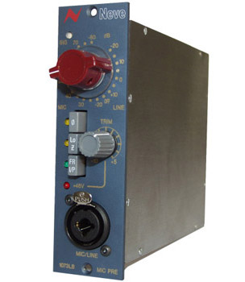
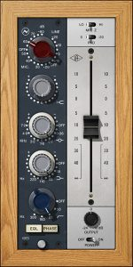

Neve 1073 – сравнителни тестове в Toxity Studio
Posted by Rumen Lishkov on / 0 Comments
Neve 1073lb vs Neve 1073 Channel Amplifier Plug-in
На 09.11.2016 година, заедно с колегите Мартин Евстатиев и Явор Разбойников, направихме тест за сравнение на хардуерното устройство, разработено от AMS-Neve – Neve 1073LB и създаденият съвместно от Universal Audio и AMS-Neve – Neve 1073 Channel Amplifier Plug-in.
По време на тестовете, на двете устройства са зададени еднакви параметри, като еквалайзерът и хай-пас филтърът на Neve 1073 Channel Amplifier Plug-in са изключени. Иначе казано, тестовете са направени с абсолютно еднакви параметрични корекции, в двата режима на устройството – микрофонен и линеен.
Когато правите сравнението, препоръчваме да сравнявате микрофонен сигнал с микрофонен сигнал (съответно – линеен с линеен), а не микрофонен с линеен или обратното. За по-добри резултати, можете да слушате примерите с професионални слушалки или студийни монитори.


За целите на теста, използвахме разнообразен звуков материал – записи на електрическа и акустична китара, контрабас, барабани, цигулка, мандолина, тромпет, роудс пиано, саксофон и вокал.
Всички входни файлове бяха с резолюция 24bit семпъл рейт – 48 kHz и
пикови нива -3db.
Използвахме звуковата карта на Universal Audio – Apollo Firewire,
чиито аналогови входове и изходи бяха настроени на стандарт +4db.
Всичkи изходни файлове са записани без нормализиране или други корекции, във формат Wav, 24bit, 48 kHz.
Форматът на качените за прослушване тук файлове е Wav – 24bit, 48 kHz.
По-долу можете да чуете резултатите от сравнението:
Акустична китара
Акустична китара – източник Акустична китара – Neve 1073LB Line -20db Акустична китара – UAD Neve 1073 Line – 20db Акустична китара – Neve 1073LB Mic -20db Акустична китара – UAD Neve 1073 Mic -20dbКонтрабас
Контрабас – източник Контрабас – Neve 1073LB Line -20db Контрабас – UAD Neve 1073 Line – 20db Контрабас – Neve 1073LB Mic -20db Контрабас – UAD Neve 1073 Mic -20dbБарабани
Барабани – източник Барабани – Neve 1073LB Line -20db Барабани – UAD Neve 1073 Line – 20db Барабани – Neve 1073LB Mic -20db Барабани – UAD Neve 1073 Mic -20dbЕлектрическа китара
Електрическа китара – източник Електрическа китара – Neve 1073LB Line -20db Електрическа китара – UAD Neve 1073 Line – 20db Електрическа китара – Neve 1073LB Mic -20db Електрическа китара – UAD Neve 1073 Mic -20dbМандолина
Мандолина – източник Мадолина – Neve 1073LB Line -20db Мадолина – UAD Neve 1073 Line – 20db Мадолина – Neve 1073LB Mic -20db Мадолина – UAD Neve 1073 Mic -20dbРоудс пиано
Роудс пиано – източник Роудс пиано – Neve 1073LB Line -20db Роудс пиано – UAD Neve 1073 Line – 20db Роудс пиано – Neve 1073LB Mic -20db Роудс пиано – UAD Neve 1073 Mic -20dbСаксофон
Саксофон – източник Саксофон – Neve 1073LB Line -20db Саксофон – UAD Neve 1073 Line – 20db Саксофон – Neve 1073LB Mic -20db Саксофон – UAD Neve 1073 Mic -20dbТромпет
Тромпет – източник Тромпет – Neve 1073LB Line -20db Тромпет – UAD Neve 1073 Line – 20db Тромпет – Neve 1073LB Mic -20db Тромпет – UAD Neve 1073 Mic -20dbЦигулка
Цигулка – източник Цигулка – Neve 1073LB Line -20db Цигулка – UAD Neve 1073 Line – 20db Цигулка – Neve 1073LB Mic -20db Цигулка – UAD Neve 1073 Mic -20dbВокал
Вокал – източник Вокал – Neve 1073LB Line -20db Вокал – UAD Neve 1073 Line – 20db Вокал – Neve 1073LB Mic -20db Вокал – UAD Neve 1073 Mic -20dbОЩЕ ЗА НАШЕТО ОБОРУДВАНЕ

Neve 88RS Channel Strip
Posted by Rumen Lishkov on / 0 Comments
Серията 88 на Neve е образец за широко форматна конзола. Тя е въведена през 2001 година и е известна със своята зашеметяваща дълбочина и детайл. Тя е съчетава а в себе най-доброто от всичко, което Neve са направили преди това. Не случайно такива конзоли се намират в едни от най-добрите студия по света, като Skywalker, Ranch, Capitol...

Cubase Pro 9
Posted by Rumen Lishkov on / 0 Comments
Steinberg – Cubase Pro 9 Toxity Studio разполага с най- новата версия на софтуера на Steinberg – Cubase Pro 9. С този софтуер ние имаме опит още от далечната 1993 година. Версия 9 studio e съобразена с най-съвременните стандарти в музикалния звукозапис. Тази най-нова версия на софтуера, позволява студийното време да се използва изключително...

MXR Flanger Doubler
Posted by Rumen Lishkov on / 0 Comments
MXR Flanger Doubler UAD2 Plug-in вече е част от нашето оборудване. Той звучи невероятно. MXR Flanger Doubler е едно от най-добрите устройства от този тип, правени някога. Може да се използва както като класически фленджър, така и при дублиране на инструменти или вокали. Обработеният с него звуков материал чудесно се вписва в микса и има същият...

1176 Classic Limiter Collection
Posted by Rumen Lishkov on / 0 Comments
Прототипът на Universal Audio 1176 е разраборен от Бил Путъм (Bill Putham) и представлява изключителен технологичен пробив. Това е първият ултра бърз транзисторен пик лимитер. Той е дал своя характер и пънч на много от най-емблематичните песни в историята. Universal Audio са моделирали трите модификации на този компресор – 1176 Rev A, 1176 Rev E и...

LA2A Silver & Grey
Posted by Rumen Lishkov on / 0 Comments
LA2A Silver & Grey UAD-2 Plug-ins С полиран алуминиев панел и модул за редуциране на гейна (gain reduction) – T4B, LA2A версия „Silver“ е създаден в края на шейсетте години от Бил Путъм (Bill Putham). Той е може би най-гъвкавия от трите опто компресора – LA2, LA2A Silver и LA2A „Gray“. Разработеният в средата на шейсетте...

Teletronix LA2
Posted by Rumen Lishkov on / 0 Comments
Teletronix LA2 UAD Plug-in Създаден през далечната 1960 година, LA2 предхожда класическия компресор LA2A. Той реагира бавно на обработвания звуков материал и има изключително музикален звук, който се дължи на неговата уникална технологична архитектура. Това е измисленият преди повече от 50 години луминисцентен панел, който е вложен в неговия Т4 модул. LA2 може да работи много прозрачно, но...

Pultec MEQ-5 – toxitystudio.com
Posted by Rumen Lishkov on / 0 Comments
Част от Pulted Passive EQ Collection на Universal Audio, обработващият средни честоти Pultec MEQ-5 е скъпо звучащ лампов еквалайзер. Той разполага с две ленти на усилване на средни честоти и една лента за намаляване. Подходящ е за корекции на инструменти в средния регистър като китари, вокали и други. С негова помощ инструментите могат да бъдат фиксирани и...

Sound Machine Wood Works
Posted by Rumen Lishkov on / 0 Comments
Sound Machine Wood Works, разработен ексклузивно за платформата на Universal Audio и без налично „пиратско копие“, е без аналог към настоящия момент. Този чудесен плъг-ин, дава възможност за постигане на отличен звук на вашите акустични китари. Без него, това може да бъде направено чрез използване на микрофони от най-висок клас. И разбира се, в отлично...

Studer A800
Posted by Rumen Lishkov on / 0 Comments
Studer A800 UAD2 Plug-in вече е част от нашето оборудване! Studer A800 е една от легендите в звукозаписната техника. Този многоканален магнетофон е създаден през 1978 година. Той е първата лентова машина с микропроцесорно управление. С годините, A800 става еталон за многопистово лентово устройство и аналогов лентов звук. На този 2 inch многоканален магнетофон са...

Pultec EQP-1A – toxitystudio.com
Posted by Rumen Lishkov on / 0 Comments
Pultec EQP-1A UAD2 Plug-in значително надхвърля възможностите на стандартните плъгини. Той пресъздава изключително вярно режимите на работа на сложните схеми на хардуера. Използвайки го, човек може да усети с пълна сила аналоговата магия на Pultek. Работейки с EQP-1A, вие ще чуете ефектите на помпане, рязане и претоварване също както и при хардуерното устройство. Ще усетите...